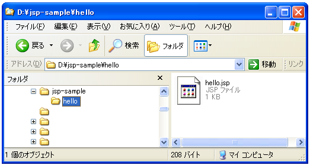
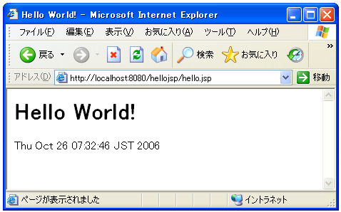

- Home ›
- サーブレット/JSP入門 ›
- JSPの基礎
JSP実行までの流れ
JSPに関して文法などを詳しく見ていく前に、JSPで作成したアプリケーションを実行する手順を確認しておきます。
※JSPページはTomcat上で動作させていきます。Tomcatがインストールされていない場合には『Tomcatのインストールと環境設定』を参照して先にインストールをしておいて下さい。
コンテキストファイルの作成
サーブレットやJSPを使ったプログラムではアプリケーション単位で管理します。つまり単独のファイルをバラバラに配置して実行するというよりも、目的毎にアプリケーションを作成し、その中にサーブレットやJSPページを配置していきます。例えば「掲示板」や「ショッピングモール」と言った目的別にアプリケーションを作成して、その中に利用するJSPページなどを配置するわけです。
そこでJSPページを含むアプリケーションを配置するディレクトリを用意します。今後JSPのサンプルは「D:¥jsp-sample¥」内に配置することとし、今回作成するアプリケーションは「D:¥jsp-sample¥hello¥」ディレクトリ内に配置することにします。
[D] -- jsp-sample
|
+-- hello (アプリケーションのルートディレクトリ)
| |
+-- HTMLページ
|
+-- JSPページ
|
次にコンテキストの設定を行います。コンテキストファイルとはアプリケーションの配置場所や呼び出し方などの情報をTomcatに設定するものです。
今回のアプリケーションはURLパスとして「hellojsp」を付けて「http://localhost:8080/hellojsp/xxxx」の形式で呼び出すことにします。「xxxx」の箇所にHTMLページやJSPページなどを指定することになります。
コンテキストファイルは以下のようになります。
<Context path="/hellojsp" docBase="d:/jsp-sample/hello"/>
「path」には呼び出す場合のURLパスを指定し、「docBase」には実際に呼び出されるファイルが置いてあるディレクトリを指定します。
作成したコンテキストファイルは「(Tomcatをインストールしたディレクトリ)¥conf¥Catalina¥localhost¥」に置いておきます。
※コンテキストファイルについては『コンテキストの設定』を参照して下さい。
JSPページの作成
次にJSPページの作成です。
JSPページはHTMLページなどと同じくテキストファイルに記述していって下さい。またJSPページの拡張子は「.jsp」となります。
今回は次のようなファイルにします。
<%@ page contentType="text/html;charset=Shift_JIS" %> <html> <head> <title>Hello World!</title> </head> <body> <h1>Hello World!</h1> <% out.println(new java.util.Date()); %> </body> </html>
JSPページはコンパイルなどは必要無いため、作成したファイルをそのまま「D:¥jsp-sample¥hello¥」ディレクトリ内に配置しておきます。

これで準備は完了です。
アプリケーションの実行
それではブラウザで下記のURLを開いて下さい。
http://localhost:8080/hellojsp/hello.jsp
次のように表示されれば成功です。

JSPページの場合には事前にコンパイルも必要ありませんし「web.xml」の記述も必須ではありません。HTMLページと同じように扱うことが出来ます。
( Written by Tatsuo Ikura )

著者 / TATSUO IKURA
初心者～中級者の方を対象としたプログラミング方法や開発環境の構築の解説を行うサイトの運営を行っています。